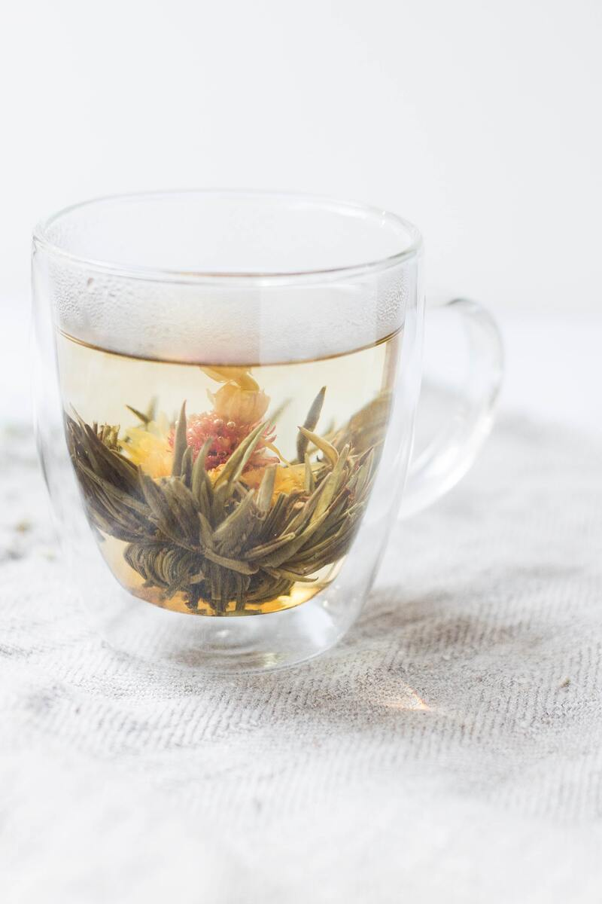
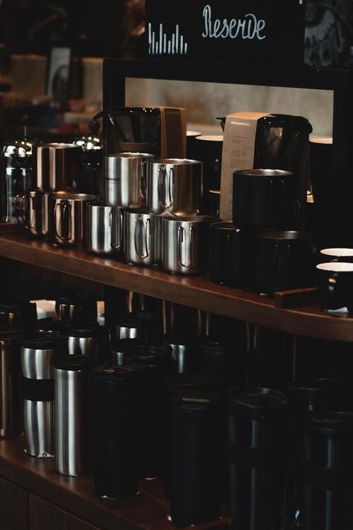
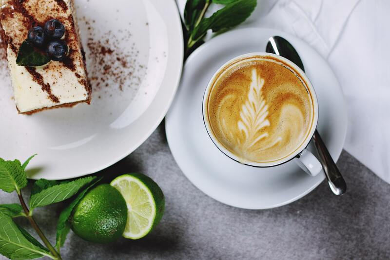
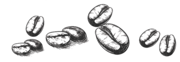
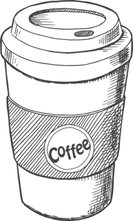
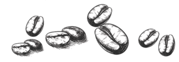
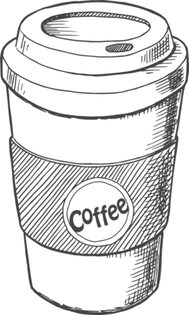

Hi annyeonghi gaseyo Loran
deo manh-eun geos-eul bogo dang-gimyeon yeogileul nulleo
View discount menu
Activity
.jpg)
- 
- 
- 
It is organic coffee beans that are well known in nature and are rich in photosynthesis
and fiber.
Also, after 100 years of tradition, it is reliable as the coffee beans used in Loran
This is a tea extracted from the flowers of Mari.
There are several cups and temps made in our own factory.
Spend a leisurely day with the harmony of dessert and coffee
about coffee column
Your beans’ greatest enemies are air, moisture, heat, and light. To preserve your beans’ fresh roasted flavor as long as possible, store them in an opaque, air-tight container at room temperature. Coffee beans can be beautiful, but avoid clear canisters which will allow light to compromise the taste of your coffee. Keep your beans in a dark and cool location. A cabinet near the oven is often too warm, and so is a spot on the kitchen counter that gets strong afternoon sun. Coffee's retail packaging is generally not ideal for long-term storage. If possible, invest in storage canisters with an airtight seal.
Coffee cultivation and trade began on the Arabian Peninsula. By the 15th century, coffee was being grown in the Yemeni district of Arabia and by the 16th century it was known in Persia, Egypt, Syria, and Turkey. Coffee was not only enjoyed in homes, but also in the many public coffee houses — called qahveh khaneh — which began to appear in cities across the Near East. The popularity of the coffee houses was unequaled and people frequented them for all kinds of social activity. Not only did the patrons drink coffee and engage in conversation, but they also listened to music, watched performers, played chess and kept current on the news. Coffee houses quickly became such an important center for the exchange of information that they were often referred to as “Schools of the Wise.” With thousands of pilgrims visiting the holy city of Mecca each year from all over the world, knowledge of this “wine of Araby” began to spread.
Decaffeination removes about 97% or more of the caffeine in coffee beans. A typical cup of decaf coffee has about 2 mg of caffeine, compared to a typical cup of regular coffee, which has about 95 mg of caffeine.
Video
Procedure
 



 - Vector69Com.png)